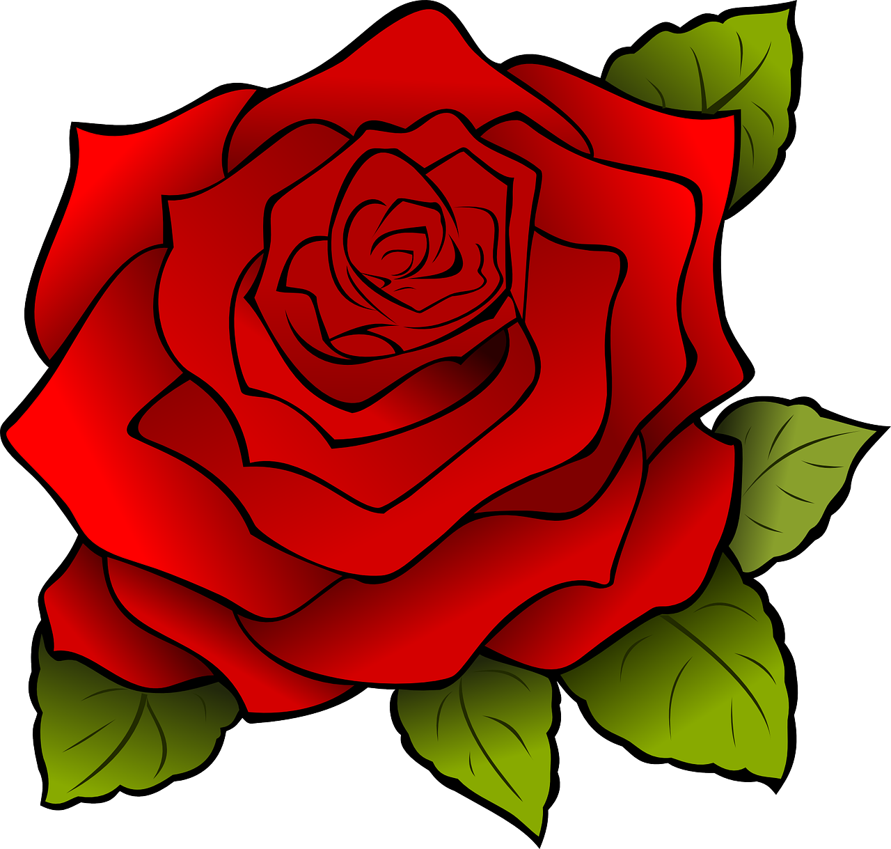
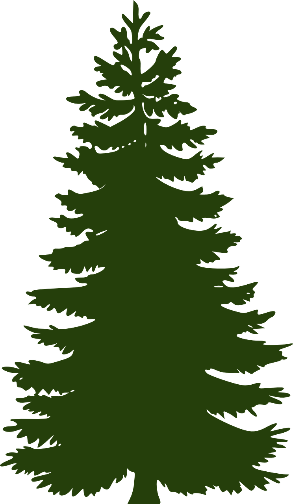

Növények csoportosítása
Zárvatermők:rózsa
Nyitvatermők:Fenyő
Egylaki
Kétlaki
Egyszikű
Kétszikű
Egy vagy Kétszikű?

Éghajlati övezetek, és éghajlatok:
Hideg éghajlati övezet
tajga
tundra
Mérsékelt éghajlati övezet
Száraz kontinentális
Nedves kontinentális
Óceáni
Mérsékelt övezeti monszun
Mediterrán
Mérséklet övezeti sivatagi
Forró éghajlati övezet
Egyenlítői
Szavanna
Átmeneti öv
Trópusi sivatagi öv
Trópusi monszun öv